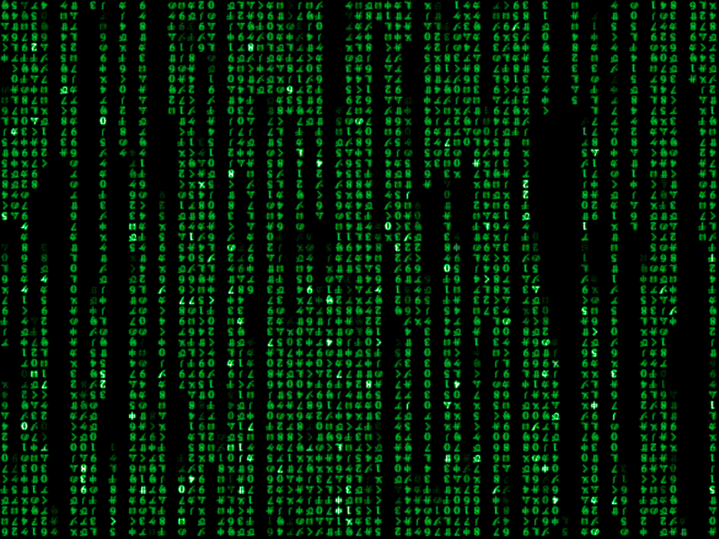

<html>
<head>
<script type="text/javascript">
function okno_zamknij()
{
window.close()
}
</script>
</head>
<body>
Teoria: <br>
<b> a)Uwagi na temat JS </b><br>
-JS powsta³ w 1995 roku <br>
-Skrypty te s³u¿¹ najczêœciej do zapewnienia interakcji poprzez reagowanie na zdarzenia, walidacji danych wprowadzanych w formularzach lub tworzenia z³o¿onych efektów wizualnych <br>
-JS jest wykorzystywany u klienta <br>
-JS jest bezpieczny, gdy projekty w nim budowane s¹ traktowane z odpowiedni¹ dba³oœci¹ i zastosowaniem najlepszych praktyk. <br>
-JavaScript jako jeden z niewielu jêzyków programowania jest zorientowany obiektowo. W praktyce, jeœli zastosujemy na stringu funkcjê tak¹ jak length czy charAt , to jêzyk niejawnie tworzy z niego obiekt, a potem wywo³uje dan¹ funkcjê. <br>
<br>
<b> window.open("obraz.html","okienko","toolbar=no,directories=no,menubar=no,height=280,width=160,top=200,left=200"); </b><br><br>
Wyt³umaczenie: <br><br>
toolbar=no > wartoœæ yes lub no (1 lub 0): pokazuje lub ukrywa standardowy pasek narzêdzi <br>
directories=no, > wartoœæ yes lub no (1 lub 0): pokazuje lub ukrywa przyciski katalogów <br>
menubar=no, > wartoœæ yes lub no (1 lub 0): pokazuje lub ukrywa menu przegl¹darki <br>
height=280, > wartoϾ w pixelach (1 lub 0): ustawia wysokoϾ okna <br>
width=160, > wartoϾ w pixelach (1 lub 0): ustawia szerokoϾ okna <br>
top=200, > wartoœæ w pixelach : ustawia po³o¿enie okna wzglêdem góry ekranu <br>
left=200 > wartoœæ w pixelach : ustawia po³o¿enie okna wzglêdem lewej strony ekranu <br><br>

<input type="button" value="zamknij okno" onclick="okno_zamknij()"/>
</body>
</html>